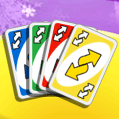

21 |
Karten |
 |
|
Du spielst mit blauen, grünen, gelben und roten Karten mit Werten von 0 bis 9. Das sind die Grundkarten des Spiels. Sie bestimmen den allgemeinen Spielfluss. Zieh Zwei Karten Wenn nach den Standardregeln gespielt und eine Zieh Zwei Karte abgelegt wird, muss der nächste Spieler 2 Karten ziehen und darf in dieser Runde keine Karte ablegen. Spielst du UNO™ mit Addieren und hat der Spieler vor dir eine Zieh Zwei Karte abgelegt und du hast ebenfalls eine, dann kannst du sie ablegen und musst keine Karten ziehen. Der nächste Spieler erhält doppelt so viele Karten. Hat er auch die gleiche Karte, bekommt der nächste Spieler dreimal so viele Karten. Insgesamt gibt es 8 Zieh Zwei Karten: 2 blaue, 2 grüne, 2 rote und 2 gelbe.
Aussetzen Karten Wenn diese Karte abgelegt wird, muss der nächste Spieler aussetzen, d.h. er wird in dieser Runde übersprungen. Insgesamt gibt es 8 Aussetzen Karten: 2 blaue, 2 grüne, 2 rote und 2 gelbe.
Retour Karten Wird diese Karte abgelegt, ändert sich die Spielrichtung. Das Spiel wird in der neuen Richtung fortgesetzt, bis eine andere Retour Karte abgelegt wird. Insgesamt gibt es 8 Retour Karten: 2 blaue, 2 grüne, 2 rote und 2 gelbe.  Farbenwahlkarten Farbenwahlkarten können auf jeder Kartenfarbe abgelegt werden. Der Spieler, der diese Karte ablegt, kann eine beliebige Farbe wählen, mit der das Spiel fortgesetzt wird.
Zieh Vier Farbenwahlkarte Wenn ein Spieler diese Karte ablegt, darf er nicht nur die neue Farbe wählen, die gespielt wird, sondern der nächste Spieler muss außerdem vier Karten vom Kartenstock ziehen und aussetzen. Diese Karte darf nur gelegt werden, wenn der Spieler keine Karte hat, die der gespielten Farbe entspricht. Ein Spieler kann bluffen und diese Karte spielen, selbst wenn er eine Karte der gespielten Farbe besitzt. Wird er aber herausgefordert, so muss er vier Karten ziehen. Beachte: Wenn ein Spieler eine spielbare Nummern- oder Aktionskarte (Retour, Aussetzen oder Zieh Zwei Karte) auf der Hand hat, darf er trotzdem die Zieh Vier Farbenwahlkarte ablegen. Es ist allerdings nicht erlaubt, die Zieh Vier Farbenwahlkarte abzulegen, wenn der Spieler eine Farbenwahlkarte auf der Hand hat.
Wenn der Spieler vor dir eine Zieh Vier Farbenwahlkarte spielt, kannst du ihn herausfordern, indem du das Herausfordern-Feld wählst, oder du ziehst vier Karten, indem du das Ziehen-Feld wählst. |


 |
 |
 |